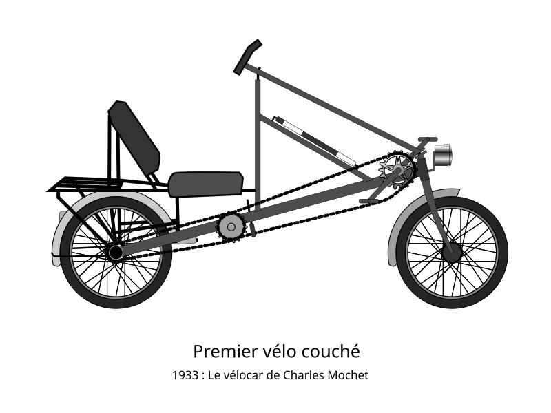
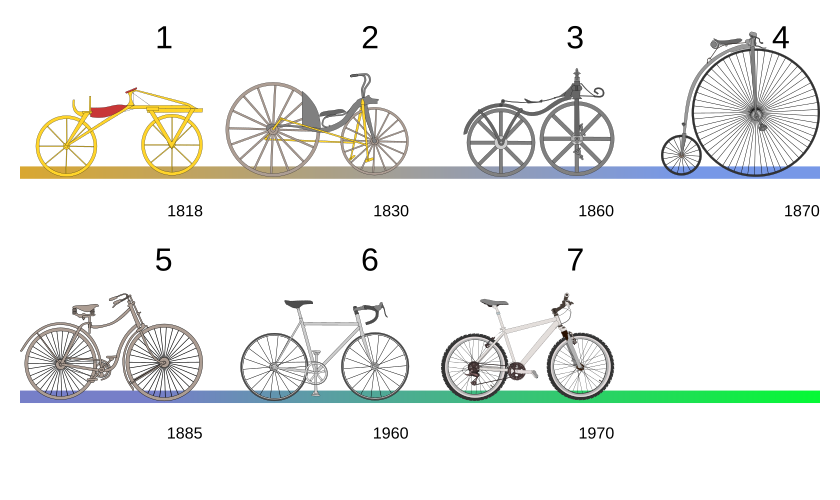

A Bicycle, Subject to Approval
Published: October 10, 2026
A bicycle seems like a fairly straightforward thing to recognize. Two wheels, pedals, somebody doing the pedaling. Give it a speed record, and you might reasonably expect congratulations.
You might also need to check the definition.
In 1933, Francis Faure broke the one-hour cycling record riding the Velocar, a recumbent bicycle. Supporters saw an improved bicycle; others questioned whether it counted as a bicycle at all. Those interpretations carried unequal weight. The Union Cycliste Internationale used its authority to turn its definition into racing rules, excluding recumbents and annulling the Velocar’s records. According to Hassaan Ahmed, Omer Masood Qureshi, and Abid Ali Khan, that maneuver helped preserve the upright bicycle’s dominance. What seems like an obvious definition today carries a history of whose interpretation was deemed authoritative enough to become the standard.


The bicycle left me with a question: who gets to decide what counts?
During the first seven weeks of COMPUT 502 with Donald “Don” Winiecki, we examined whose priorities shape technologies and their rules. My partner Lindsay and I worked through case studies, comparing stakeholders’ priorities and proposing changes for people whose interests received less attention.
That question also reaches into my own work. Who gets a meaningful say in what I design? Our reading for Full Stack Ethics, Vallor’s technomoral virtues, and ALTAI gave me ways to examine benefits, harms, responsibilities, and whose interests a decision serves. Meaningful participation involves talking about the values behind our judgments and being willing to examine them together. Open-mindedness includes skepticism.
My research asks how AI-shaped workflows become part of research culture. What makes practices persist, change, disappear, or return as teams learn from one another? In the workshops I’m planning, teams would learn and test workflows, then choose to retain, revise, or completely reject components. They would pass their procedures and the reasons for their choices to later teams. I want to compare what persists with what researchers find useful and how independent reviewers assess the work they produce. Those observations would inform agent-based models, computer simulations exploring how practices might change across longer sequences of teams. The aim is to help researchers evaluate and share practices that uphold scientific standards.


But how long does this kind of change take? Narayanan and Kapoor’s AI as Normal Technology challenged my expectations. They argue that diffusion depends on people and institutions changing habits, testing practices, and learning what works in their own settings. They expect that process to unfold over decades. I had expected research workflows to change more quickly. Their argument gives me a longer horizon to consider as I frame my research and design my teaching.
In my Introduction to R Programming course, students could choose whether to use the reflection chatbot. I had made it optional, but I hadn’t provided another guided route into reflection.
I survey students at the beginning of each semester to get to know them and inform my teaching. In those surveys, students have expressed ethical, environmental, and educational reservations about AI. More students preferred not to use it than I had anticipated when designing these activities. Their choice meant they could miss an opportunity to practice reflection, something I wanted everyone to develop. Taking their concerns seriously meant looking again at my own design. Students can now work through the reflection framework independently. For spring, I’m considering how to give that option better guidance.
Who establishes acceptable practices through their judgments, values, participation, and authority? The bicycle has followed me from a reading into my research, and then into my classroom. We are still working out what appropriate AI use looks like, and people bring different experiences and values to that conversation. Don’s worksheets pushed me to consider how stakeholder perspectives need to shape my research and teaching from the beginning. I cannot assume that researchers or students share the same enthusiasm, reservations, or priorities. Their participation should influence how I design, evaluate, and revise practices, with care for inclusion, learning, and scientific integrity.
As I move into Ed Ferrier’s portion of COMPUT 502, I’m grateful to Don for helping me examine those conditions more closely. Thank you, Don, for the instruction that continues to shape the questions I bring to my research and teaching.